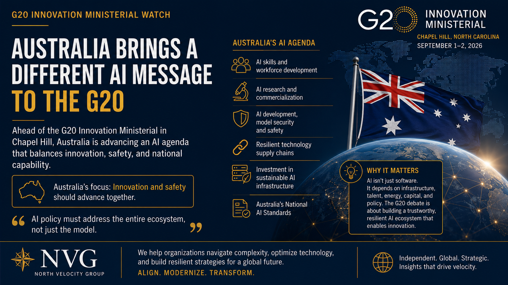

As the G20 Innovation Ministerial approaches in Chapel Hill, North Carolina, Australia is bringing an AI strategy that is broader than regulation.
The United States is expected to promote a lighter touch approach to AI governance through the proposed Carolina Principles. Australia is approaching the conversation from a different angle. Its message is increasingly focused on innovation, safety, infrastructure, workforce development, standards and national capability.
In Plain English
Two of the world's largest economies are showing up to the same AI meeting with different pitches. The United States wants light-touch rules and fewer new regulators. Australia wants to talk about AI as one connected system, meaning chips, power, data centers, workers, safety testing and standards all at once, not just the model itself. Australia has been building toward this position for the better part of a year, and it arrives in Chapel Hill with a plan that has already been running for nine months.
Assistant Minister for Science, Technology and the Digital Economy Dr Andrew Charlton will represent Australia at the September 1 and 2 G20 Innovation Ministerial. Australia says discussions will include AI skills and workforce development, research and commercialization, resilient technology supply chains, model security and safety, and investment in sustainable AI infrastructure.
Australia started building this strategy before the G20 meeting
Australia released its National AI Plan on December 2, 2025. The plan established three goals: capture the opportunity by building infrastructure, strengthening domestic AI capability and attracting global investment; spread the benefits by supporting AI adoption, training workers and making AI benefits available across the economy; and keep Australians safe by using regulation, existing legal frameworks and responsible AI practices to manage emerging risks.
The G20 Innovation Ministerial comes approximately nine months after Australia launched the plan. Australia therefore arrives in Chapel Hill with an AI policy framework that has already been operating, tested and expanded.
The economic opportunity
Australia is not approaching AI policy as a purely regulatory exercise. Austrade estimates that AI and automation could contribute as much as A$600 billion per year to Australia's GDP by 2030. Australia already has approximately 650 AI companies headquartered in the country, and more than A$700 million in private investment flowed into Australian AI firms during 2024.
That changes the policy calculation. Australia is not simply asking how to control AI. It is asking how to capture more of the economic value AI creates.
Australia initially chose a different regulatory path
When the National AI Plan was released, Australia emphasized existing technology neutral laws and voluntary guidance rather than immediately creating a comprehensive standalone AI law.
The government's Voluntary AI Safety Standard established 10 guardrails covering accountability, risk management, data governance, testing, human oversight, transparency, contestability, supply chain transparency, record keeping and stakeholder engagement.
The approach was deliberately practical. Instead of creating an entirely new regulatory system, Australia could build AI governance into existing organizational processes. That has advantages for businesses. It can reduce duplication, it can allow existing regulators to use sector expertise, and it can give organizations a practical baseline while governments continue to determine where additional regulation is necessary.
But Australia is now moving toward standards
This is where the story gets more interesting. Australia has not remained entirely in a voluntary model.
In a July 2026 speech in Sydney, Prime Minister Anthony Albanese announced the government's plan to establish an Office of AI and a single set of Australian Standards for AI, with legislation targeted for early 2027. The standards are intended to bring issues such as energy, water, data centers, national interest, workforce and innovation into a more coordinated national framework.
That represents an evolution rather than a complete reversal. Australia is moving from voluntary guidance to national standards to potential legislation without simply copying the comprehensive regulatory model used by other jurisdictions. The result could become an interesting middle path between purely voluntary governance and a broad standalone AI law.
The supply chain is part of the strategy
This may be the most important part of Australia's approach for enterprise leaders. Australia's AI policy increasingly treats the technology ecosystem as an interconnected system that depends on compute, data centers, energy, semiconductors, cloud infrastructure, networks, research, capital, skilled workers and government policy. That means AI policy is becoming infrastructure policy.
Australia's National AI Plan explicitly supports investment in digital and physical infrastructure, domestic capability and global partnerships. The government has also established expectations for large scale AI infrastructure developers, including access to compute for Australian startups, researchers and other organizations.
The objective is straightforward: do not simply build data centers in Australia. Build an Australian AI ecosystem around them.
AI safety capability
The National AI Plan established the foundation for Australia's AI Safety Institute. The institute monitors, tests and analyzes emerging AI capabilities, risks and harms. It works with regulators and government agencies and contributes to international AI safety efforts.
At the same time, the National AI Centre serves as the government's lead body for helping industry adopt AI and understand where the technology can create value.
That creates an interesting structure. The National AI Centre handles adoption and industry capability. The AI Safety Institute handles testing, risk and safety intelligence. Existing regulators provide sector specific oversight. Australia's emerging AI Standards frame the national approach. This is not simply an AI regulator. It is an ecosystem.
Why enterprises should pay attention
For multinational companies, fragmented AI policy creates operational complexity. Different jurisdictions can impose different requirements for AI procurement, data governance, model testing, transparency, workforce practices, vendor accountability, infrastructure, security and cross border operations.
Australia's approach is important because it connects these issues rather than treating AI regulation as an isolated compliance problem. For companies investing in Australia, that could provide greater clarity around what the government expects from AI infrastructure, workforce development, local capability and research partnerships.
It also creates an important strategic question: who captures the value created by AI? Australia has historically relied heavily on foreign capital and technology. Its emerging AI strategy is increasingly focused on making sure investment in infrastructure also creates domestic capability, intellectual property, research opportunities and skilled employment. That is industrial policy as much as it is technology policy.
The G20 question
This makes Australia's participation particularly interesting. The United States is pushing a lighter touch approach, with fireside chats planned between senior officials and technology executives from OpenAI and Nvidia. Australia is pursuing innovation while building standards, safety capabilities, infrastructure and domestic capacity.
Those approaches are not necessarily incompatible. In fact, they may point toward a more useful global discussion. The objective should not be maximum regulation. It should not be minimum regulation either. The objective should be predictable governance that allows businesses to invest, deploy and innovate while maintaining reasonable safeguards.
What NVG is watching
The most important outcome from Chapel Hill may not be a single AI regulation. It may be whether G20 countries begin converging around a broader principle: AI policy must address the entire ecosystem, not just the model.
Australia's experience provides a useful case study. Infrastructure, skills, capital, safety, standards, supply chains, research and commercialization are interconnected issues.
For enterprise leaders, that means AI strategy can no longer sit entirely inside the technology organization. It increasingly belongs in enterprise architecture, procurement, risk management, workforce strategy, infrastructure planning and corporate strategy. The countries that recognize that connection early will be better positioned to build AI economies that are not only innovative, but resilient.
Sources & Further Reading
- Australian Department of Industry, Science and Resources, "Visit to the United States," media release.
- Australian Department of Industry, Science and Resources, National AI Plan, December 2, 2025.
- The Hon Dr Andrew Charlton MP, "National AI Plan: Empowering All Australians," media release.
- Australian Department of Industry, Science and Resources, Voluntary AI Safety Standard.
- Summary of Australia's 10 AI safety guardrails, SafeAI-Aus.
- Overview of Australia's AI Safety Institute, Viridian Lawyers.
- Australian Department of Industry, Science and Resources, National AI Centre.
- Austrade, "Australia Launches National AI Plan to Build a World-Class AI Industry."
- The Hon Dr Andrew Charlton MP, "AI in Australia's Interests," speech coverage on sovereign AI and the Australian Standards for AI.
- Axios, "Lutnick to Host Altman, Huang at G20 Innovation Ministerial in Chapel Hill," August 27, 2026.
- U.S. Department of Commerce, International Trade Administration, "Media Advisory: Press Registration for the G20 Innovation Ministerial Is Open," August 2026.
Information current as of August 30, 2026. Legislation for the Australian Standards for AI has not yet been introduced to Parliament and remains subject to National Cabinet consultation. The Carolina Principles remain under discussion and have not been finalized.
Disclosure: This article is published by North Velocity Group LLC (NVG) for informational and analytical purposes. It reflects NVG's interpretation of publicly available information and does not constitute legal, investment, regulatory or other professional advice. NVG has no financial interest in the Australian government, the G20 or any company discussed in this article.